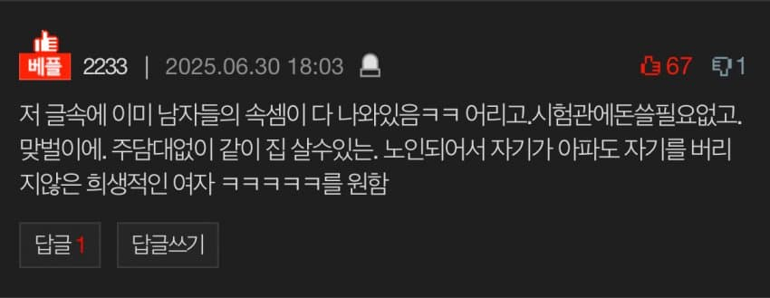

그럼 시험관으로 애를 낳고 남자 혼자 돈벌고 남자 혼자 주담대를 받아서 집을 사고 노인되서 자기가 아프면 버리는 여자를 만나라는소리냐...

그럼 시험관으로 애를 낳고 남자 혼자 돈벌고 남자 혼자 주담대를 받아서 집을 사고 노인되서 자기가 아프면 버리는 여자를 만나라는소리냐...
추천 비추 비율봐라ㅋㅋㅋ 페미비율 괜히 높다게 아니지
시부랄 페미년들 꼴보기 싫어서 여자들 다 군대 보내라는 거임 ㅈ같다
이제 슬슬 개 씹소리 별로 안먹히니 막 뱉고 보네.
ㅋㅋㅋㅋㅋㅋㅋ이게 돌려까는게 아니라 진짜 한 말이라고? ㅋㅋㅋㅋㅋㅋ
제발 1인분은 좀 해라..
무슨 지 키워줄 새아빠찾는것도아니고
저게 한녀 평균임